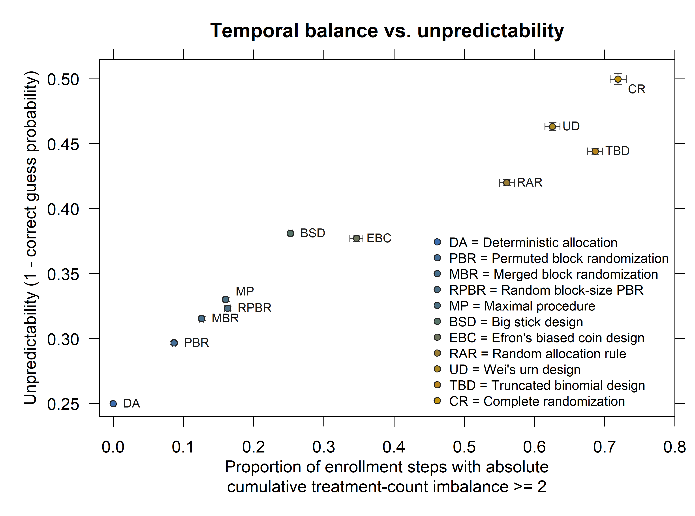

Information about Figure 1
This page explains the procedures, simulation, and source code for Figure 1 in
Choosing and Evaluating Randomization Procedures: A Tutorial.
The figure compares treatment allocation imbalance and
unpredictability for complete and restricted randomization procedures in a
single-center trial with n = 50.
Download the R source code, download the plotted summary table, or view the regenerated figure below.

How the Figure Is Constructed
For each randomization procedure, the script simulates M = 1000
independent allocation sequences. Each sequence is summarized once for the
proportion of allocations where the absolute running treatment-count
imbalance is at least 2, and once for unpredictability, defined as
1 - correct guess probability under the Blackwell-Hodges
convergence guessing strategy.
The plotted coordinates are means of these replicate-level summaries. Monte
Carlo standard errors are estimated across the independent sequences as
sd(Z) / sqrt(M). The horizontal bars show uncertainty in the
imbalance coordinate; the vertical bars show uncertainty in the
unpredictability coordinate. Allocation prefixes from the same sequence are
not treated as independent observations.
Bars are approximate 95% Monte Carlo intervals: the mean plus or minus
1.96 * MCSE. Means and interval endpoints are plotted directly,
including endpoints above 0.5. The deterministic comparator uses strict
ABAB... alternation and has zero Monte Carlo uncertainty.
Procedures in the Figure
A and B denote the two treatments. All procedures target equal allocation, but they differ in how strongly they constrain the sequence. The settings below are those used for the plotted points; exact final balance is not guaranteed by every procedure.
- DA: Deterministic allocation
- Assign treatments in strict ABAB order. Counts differ by at most one, but every assignment is predictable to someone who knows the rule. This is a nonrandomized comparator.
- CR: Complete randomization
- Assign each participant independently to A or B with probability 1/2. Previous assignments do not affect the next assignment, so treatment counts can drift apart.
- RAR: Random allocation rule
- Randomly order a list containing 25 A and 25 B assignments, giving every such ordering equal probability. Final balance is guaranteed, but substantial imbalance can occur during recruitment. RAR here does not mean response-adaptive randomization.
- TBD: Truncated binomial design
- Use independent equal-probability assignments until one treatment reaches its quota of 25. Assign all remaining participants to the other treatment. This guarantees final balance but makes the last assignments deterministic once a quota is reached.
- PBR: Permuted block randomization
- Randomly order two A and two B assignments within each block of four. Counts are equal after every complete block. The simulated sequence stops at participant 50, partway through its last block, so final balance is not guaranteed here.
- RPBR: Random block-size permuted block randomization
- Randomly select block sizes from 4, 6, and 8 and randomly order equal numbers of A and B within each block. Varying block sizes makes block boundaries less obvious, but does not eliminate predictability. Recruitment stops at 50, potentially leaving an incomplete block.
- MP: Maximal procedure
- Give equal probability to all length-50 sequences that end with 25 assignments per treatment and never let the absolute running count difference exceed two. Unlike permuted blocks, this does not require balance at regularly spaced block boundaries.
- EBC: Efron's biased coin design
- Use probability 1/2 for each treatment when counts are equal. Otherwise, assign the underrepresented treatment with probability 2/3. This encourages balance without imposing a strict imbalance limit.
- UD: Wei's urn design
- Start with 10 balls for each treatment. Draw a ball to select the treatment, replace it, and add two balls for the opposite treatment. The changing urn composition favors the underrepresented treatment, with the strength of that preference depending on the allocation history.
- BSD: Big stick design
- Use equal assignment probabilities while the absolute count difference is below two. At the boundary of two, force the next assignment toward balance. Final balance is not required.
- MBR: Merged block randomization
- Generate two independent streams of balanced blocks of size two (AB or BA). At each step, randomly choose either stream with probability 1/2 and take its next unused assignment. Merging hides the original block boundaries while keeping the absolute running imbalance at most two.
The package-based procedures use randomizeR;
MBR uses the BlockMergeGen function in the downloadable script.
Background is available in
Berger et al. (2021).
Interpretation
The Monte Carlo intervals quantify simulation error under this specific sample size and set of procedure parameters. They do not represent sensitivity to block size, biased-coin probability, maximum tolerated imbalance, sample size, or alternative guessing strategies.
The convergence strategy guesses the underrepresented treatment and guesses at random when the counts are equal. Consequently, strict alternation has an unpredictability score of 0.25 under this strategy, even though an observer who knows the alternating rule can predict every assignment. This score is conditional on the guessing strategy.